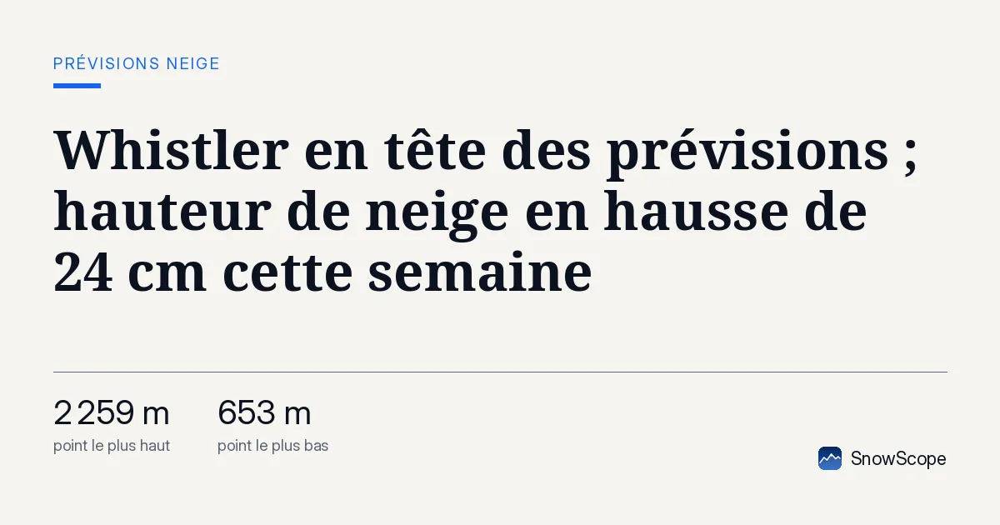
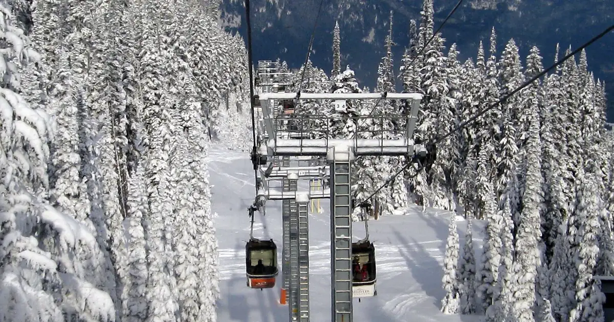
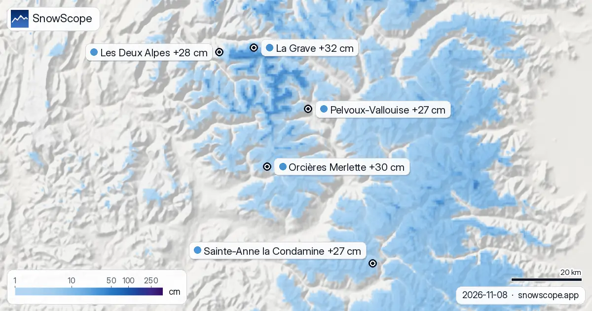
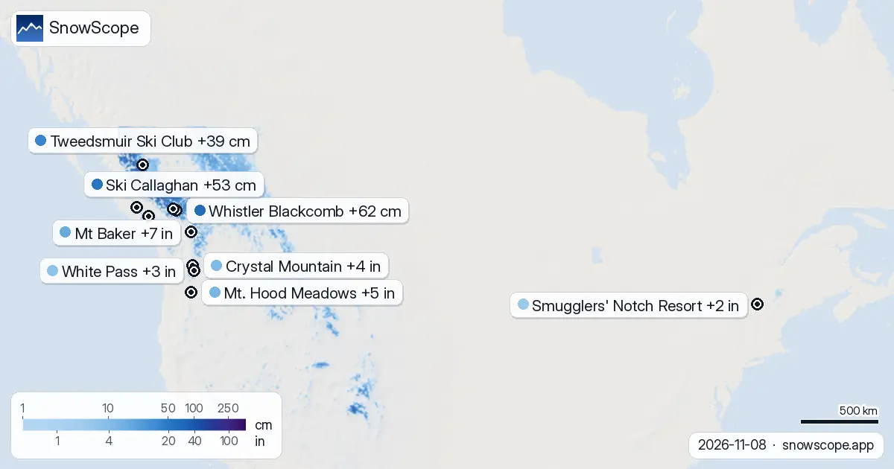

Whistler en tête des prévisions ; hauteur de neige en hausse de 24 cm cette semaine
Whistler Blackcomb a gagné 24 centimètres de neige la semaine passée, portant sa profondeur à 50 centimètres. Alors que les domaines en tête des prévisions de l'hémisphère nord se préparent aux tempêtes majeures, Whistler domine les classements mondiaux avec 62 centimètres de neige nouvelle attendus au cours des 72 prochaines heures, tandis que les Alpes européennes suivent avec La Grave à 32 centimètres et Orcières Merlette à 30 centimètres.
Consultez les prévisions neige en temps réel pour Whistler Blackcomb sur l'application SnowScopeHauteurs de neige, alertes poudreuse et carte 3D, gratuitement.
Le bassin de Whistler et l'accumulation rapide d'eau
Un gain de 24 centimètres en une seule semaine représente une entrée significative d'eau nouvelle dans le bassin de Whistler. Actuellement à 50 centimètres, le manteau neigeux emmagasine l'eau qui alimentera les rivières, les ruisseaux et les réservoirs lors de la fonte printanière. Le taux d'accumulation au cours des sept derniers jours—environ 3,5 centimètres par jour—est bien supérieur au rythme typique de novembre. La tempête imminente, prévue pour livrer 62 centimètres d'ici le 11 novembre, va presque tripler la profondeur actuelle et créer une base inhabituellement dense pour décembre.
Pour les hydrologues qui suivent l'approvisionnement en eau en Colombie-Britannique, cette transition rapide est importante : un manteau neigeux profond en novembre signifie un écoulement printanier stable, qui remplit les réservoirs et alimente la production saisonnière pendant les mois chauds. La vitesse à laquelle l'eau entre dans le système maintenant affecte la gestion des réservoirs tout l'été.
| # | Station | Région | +24 h | +72 h | Limite pluie-neige |
|---|---|---|---|---|---|
| 1 | La Grave | Alpes · France | 10 cm | 32 cm | 2 900 m |
| 2 | Orcières Merlette | Alpes · France | 10 cm | 30 cm | 2 800 m |
| 3 | Les Deux Alpes | Alpes · France | 9 cm | 28 cm | 2 800 m |
| 4 | Sainte-Anne la Condamine | Alpes · France | 12 cm | 27 cm | 2 800 m |
| 5 | Pelvoux-Vallouise | Alpes · France | 10 cm | 27 cm | 2 800 m |
| 6 | Les Orres | Alpes · France | 10 cm | 25 cm | 2 800 m |
| 7 | Alpe d'Huez Grand Domaine | Alpes · France | 7 cm | 25 cm | 2 700 m |
| 8 | Forêt Blanche : Vars/Risoul | Alpes · France | 10 cm | 22 cm | 2 800 m |
| # | Station | Région | +24 h | +72 h | Limite pluie-neige |
|---|---|---|---|---|---|
| 1 | Mt Baker | Ouest américain · États-Unis | 0 in (1 cm) | 7 in (19 cm) | 7 900 ft (2 400 m) |
| 2 | Mt. Hood Meadows | Ouest américain · États-Unis | 1 in (3 cm) | 5 in (12 cm) | 10 500 ft (3 200 m) |
| 3 | Crystal Mountain | Ouest américain · États-Unis | 1 in (2 cm) | 4 in (10 cm) | 9 500 ft (2 900 m) |
| 4 | White Pass | Ouest américain · États-Unis | 0 in (1 cm) | 3 in (8 cm) | 9 500 ft (2 900 m) |
| 5 | Smugglers' Notch Resort | Nord-Est américain · États-Unis | 1 in (2 cm) | 2 in (4 cm) | 3 300 ft (1 000 m) |
| 6 | Sugarbush Resort | Nord-Est américain · États-Unis | 1 in (2 cm) | 2 in (4 cm) | 3 600 ft (1 100 m) |
| 7 | Tuckerman Ravine | Nord-Est américain · États-Unis | 1 in (2 cm) | 2 in (4 cm) | – |
| 8 | Whiteface Mountain | Nord-Est américain · États-Unis | 1 in (2 cm) | 2 in (4 cm) | 3 600 ft (1 100 m) |
| # | Station | Région | +24 h | +72 h | Limite pluie-neige |
|---|---|---|---|---|---|
| 1 | Whistler Blackcomb | Ouest canadien · Canada | 1 cm | 62 cm | 1 900 m |
| 2 | Ski Callaghan | Ouest canadien · Canada | 1 cm | 53 cm | 1 600 m |
| 3 | Tweedsmuir Ski Club | Ouest canadien · Canada | 0 cm | 39 cm | 1 400 m |
| 4 | Mount Cain Alpine Park | Ouest canadien · Canada | 6 cm | 21 cm | 2 500 m |
| 5 | Mount Washington Alpine Resort | Ouest canadien · Canada | 2 cm | 7 cm | 2 500 m |
| 6 | Revelstoke | Ouest canadien · Canada | 2 cm | 7 cm | 1 400 m |
| 7 | Manning Park Resort | Ouest canadien · Canada | 0 cm | 6 cm | 1 900 m |
| 8 | Grouse Mountain | Ouest canadien · Canada | 0 cm | 5 cm | 2 200 m |

La domination alpine sur la fenêtre de 72 heures
Les Alpes européennes dominent la prévision de trois jours. La Grave, France, est en tête de tous les domaines mondiaux avec 32 centimètres prévus, suivie par Orcières Merlette avec 30 centimètres et Les Deux Alpes avec 28 centimètres. La limite de neige dans la région se situe autour de 2 800 à 2 900 mètres, donc les précipitations au-dessus de ce seuil s'accumulent sous forme de neige tandis que la pluie domine les altitudes plus basses.
Pour les gestionnaires de l'eau, cette distinction est importante : la neige en altitude reste en place tout l'hiver, se libérant progressivement à mesure que les températures augmentent. La pluie aux altitudes intermédiaires s'écoule rapidement, souvent en quelques heures. Les limites de neige en haute altitude nous indiquent que les réservoirs alpins se rempliront régulièrement plutôt que de déborder en cas de fonte rapide.

La tempête exceptionnelle de l'Ouest canadien
La Colombie-Britannique s'apprête à connaître l'accumulation la plus dramatique du 72 heures de l'hémisphère nord. La prévision de 62 centimètres pour Whistler Blackcomb dépasse de 30 centimètres le leader européen—une quantité véritablement exceptionnelle de neige nouvelle arrivant en peu de temps. Ski Callaghan reçoit 53 centimètres, Tweedsmuir Ski Club 39 centimètres. La limite de neige se situe autour de 1 600 à 1 900 mètres, donc les précipitations tombent sous forme de neige sur la plupart des pentes de ski, pas seulement les sommets.
Avec environ 20 centimètres par jour, cette arrivée rapide va augmenter considérablement les apports aux réservoirs fin novembre et décembre alors que le manteau neigeux se tasse et commence à se consolider.

Accumulation modeste du Pacifique et du nord-est
Le nord-ouest du Pacifique américain subit un impact beaucoup plus faible. Mt Baker mène la région avec 7 in (19 cm) sur 72 heures, Mt. Hood Meadows avec 5 in (12 cm), Crystal Mountain avec 4 in (10 cm). Les limites de neige vont de 7 900 à 9 500 ft (2 400 à 2 900 m), donc une grande partie des précipitations tombe sous forme de pluie en dessous de cette altitude.
Dans le nord-est, les domaines verront environ 1,5 in (4 cm), avec des limites de neige près de 3 300 à 3 600 ft (1 000 à 1 100 m). La constitution de la base en début de saison reste lente dans les deux régions malgré ces chutes.
Incertitude des prévisions et prudence en début de saison
Ces chiffres représentent les estimations de notre modèle de neige pour les régions d'altitude ; ils prédisent la neige nouvelle totale probable sur une zone, pas des mesures ponctuelles à une station météorologique unique. L'évolution de la tempête peut se modifier, et l'intensité peut varier. La neige en début de saison arrive sur des couches de base minces et parfois directement sur la roche mère—des conditions propices au risque d'avalanche une fois que le chargement rapide cesse.
Si vous prévoyez de skier hors-piste après une chute de neige importante, consultez d'abord le bulletin officiel d'avalanche de votre région. L'eau que toute cette neige représente a de l'importance pour les réservoirs et les rivières en aval, mais elle a des conséquences immédiates pour la stabilité des pentes raides.
Conseils aux skieurs
- Skieurs de Whistler et de l'Ouest canadien : neige abondante jusqu'à mardi ; attendez-vous à ce que les pentes de plus de 30 degrés se chargent rapidement ; restez à l'écart du terrain hors-piste jusqu'à ce que le bulletin officiel d'avalanche indique une stabilisation.
- Skieurs des Alpes : accumulation maximale au-dessus de 2 800 mètres ; risque de pluie sur neige au-dessous de cette altitude ; les pentes exposées au nord près de la limite des arbres présentent un risque d'avalanche après la tempête.
- Nord-ouest du Pacifique : chutes de neige modérées ; concentrez-vous sur la consolidation de la base en début de saison ; surveillez le mélange pluie-neige autour de 2 400–2 900 m d'altitude où les températures sont proches du gel.
- Nord-est américain : chutes de neige minimes ; une base mince reste la limitation principale ; privilégiez les terrains protégés et la couverture forestière dense pour de meilleures conditions.
- Surveillez attentivement les bulletins officiels d'avalanche et les affinements des prévisions au cours des 36 prochaines heures ; les modèles en début de saison peuvent évoluer rapidement à mesure que l'enneigement change.
À propos de ces chiffres
Les hauteurs de neige des stations sont la neige la plus épaisse sur le haut du domaine, d'après le modèle de neige SnowScope (environ 1 km, calcul du 8 novembre) ; ce sont des estimations pour une zone, pas une mesure en un point. Les valeurs des stations de mesure sont mesurées à la date indiquée. Les prévisions peuvent changer. Consultez toujours le bulletin d'avalanche officiel avant le hors-piste.
Bulletins d'avalanche officiels: EAWS (Europe) · avalanche.org (US) · Avalanche Canada
Citer ce bulletin
Pour la recherche, l'enseignement ou la presse : chiffres et graphiques réutilisables librement sous CC BY 4.0 avec cette citation.
SnowScope (2026), Whistler en tête des prévisions ; hauteur de neige en hausse de 24 cm cette semaine, https://snowscope.app/blog/fr/2026/11/where-most-snow-falls-next-72-hours-8-november-2026.html, consulté le 2026-11-08
SnowScope (Atlas Labs). (2026, November 8). Whistler en tête des prévisions ; hauteur de neige en hausse de 24 cm cette semaine. SnowScope snow reports. https://snowscope.app/blog/fr/2026/11/where-most-snow-falls-next-72-hours-8-november-2026.html
BibTeX
@misc{snowscope2026wheremostsnowfallsnext72,
author = {{SnowScope (Atlas Labs)}},
title = {Whistler en tête des prévisions ; hauteur de neige en hausse de 24 cm cette semaine},
year = {2026},
month = nov,
howpublished = {\url{https://snowscope.app/blog/fr/2026/11/where-most-snow-falls-next-72-hours-8-november-2026.html}},
note = {Published 2026-11-08 20:08 UTC; accessed 2026-11-08}
}· CC BY 4.0 · Méthodes, données et outils →
Whistler Blackcomb : neige et température selon l'altitude, cet hiver vs l'hiver dernier (outils) →
Suivre Whistler Blackcomb
Gratuit : un message quand la neige arrive, et la météo chaque matin.